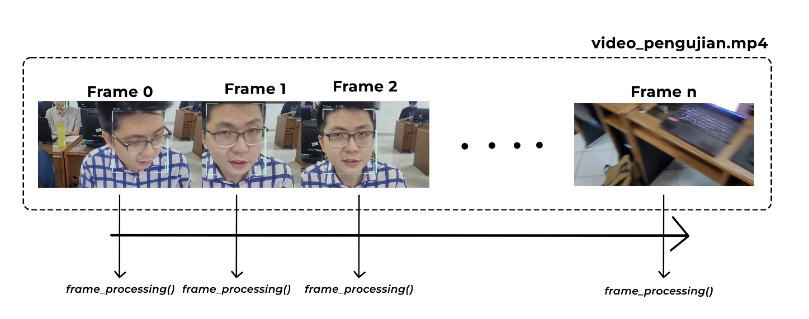
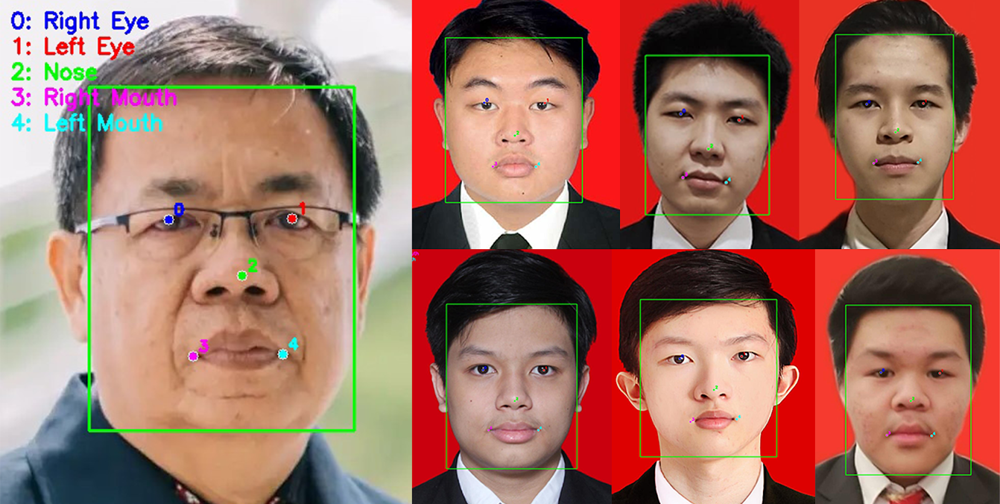
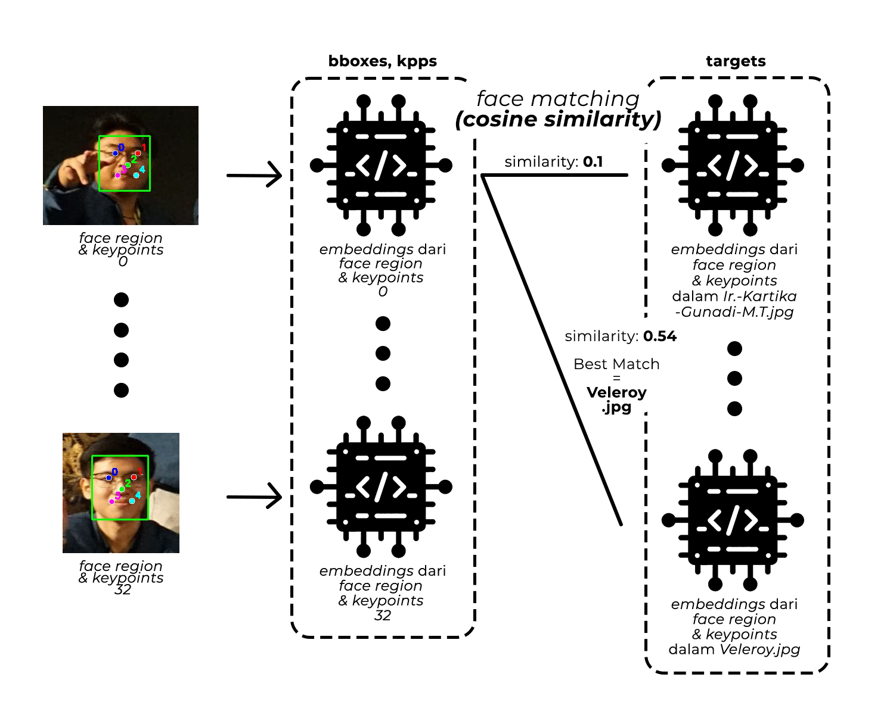
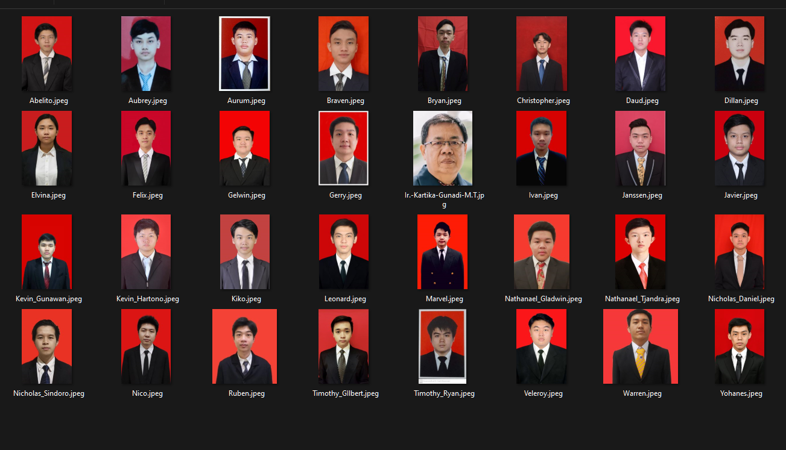
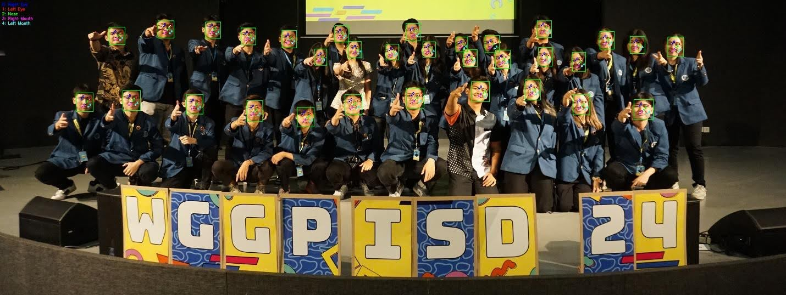
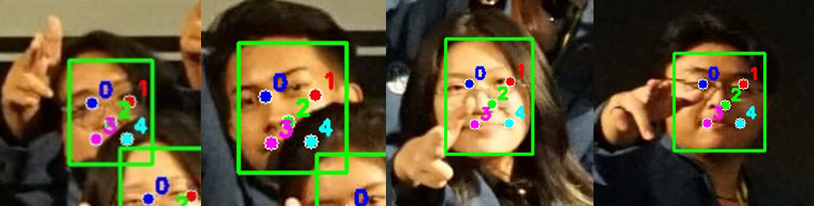
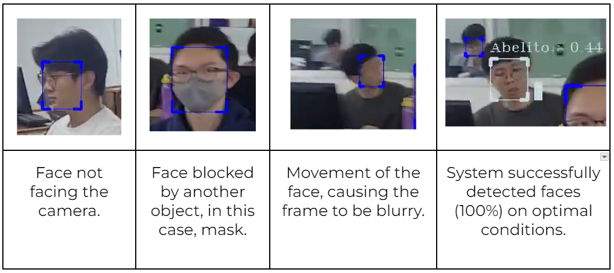

def main(params):
setup_logging(params.log_level)
# STEP 1: Instantiate face recognition and face detection models
detector = SCRFD(params.det_weight, input_size=(640, 640), conf_thres=params.confidence_thresh)
recognizer = ArcFace(params.rec_weight)
# STEP 2: Build target face database from face dataset directory
targets = build_targets(detector, recognizer, params)
colors = {name: (random.randint(0, 256), random.randint(0, 256), random.randint(0, 256))
for _, name in targets}
cap = cv2.VideoCapture(params.source)
if not cap.isOpened():
raise Exception("Could not open video or webcam")
width = int(cap.get(cv2.CAP_PROP_FRAME_WIDTH))
height = int(cap.get(cv2.CAP_PROP_FRAME_HEIGHT))
fps = cap.get(cv2.CAP_PROP_FPS)
# STEP 3: Initialize video input from webcam
out = cv2.VideoWriter("output_video.mp4", cv2.VideoWriter_fourcc(*"mp4v"), fps, (width, height))
# Create a resizable window
cv2.namedWindow("Frame", cv2.WINDOW_NORMAL)
cv2.resizeWindow("Frame", width, height)
while True:
ret, frame = cap.read()
if not ret:
break
# STEP 4: Process each frame from the video input
frame = frame_processor(frame, detector, recognizer, targets, colors, params)
out.write(frame)
cv2.imshow("Frame", frame)
if cv2.waitKey(1) & 0xFF == ord("q"):
break
cap.release()
out.release()
cv2.destroyAllWindows()

002 : Face Recognition System
A high-accuracy face recognition system capable of detecting and recognizing faces in real-time using SCRFD for face detection and ArcFace for face recognition. This project was developed as part of the Computer Vision Course Final Project.
Overview
This face recognition system is designed to accurately detect and identify faces in images and video streams. The system employs two cutting-edge deep learning algorithms: Sample and Computation Redistribution for Efficient Face Detection (SCRFD) for face detection and Additive Angular Margin Loss for Deep Face Recognition (ArcFace) for face recognition.
The face detection component can locate faces in various lighting conditions, angles, and even when partially obscured by objects. The face recognition component converts detected faces into unique numerical vectors (embeddings) that can be compared to identify individuals. Using cosine similarity, the system matches these vectors against a database of known faces to determine identity.
Testing results demonstrate exceptional performance with a 100% accuracy rate for face detection in controlled environments and high accuracy in face recognition tasks. The system only struggles with faces that are significantly turned away from the camera, substantially covered by other objects, or blurred due to movement. These limitations are due to the algorithm's reliance on key facial points around the eyes, nose, and mouth.

The system processes each video frame sequentially, making it suitable for real-time applications. It maintains accuracy while being computationally efficient, making it deployable on standard hardware.
Technology Stack
OpenCV
SCRFD
ArcFace
Python
NumPy
Cosine Similarity
CUDA
Project Workflow
The face recognition system follows a structured workflow for processing images and video frames:
1. Face Detection with SCRFD

SCRFD employs a neural network approach to detect faces in images, identifying both the facial region (bounding box) and key facial landmarks. The model uses multi-scale feature detection to accurately locate faces of various sizes and angles. It processes images in three steps: generating anchor points across multiple scales (8, 16, and 32 pixels), detecting potential faces, and applying Non-Maximum Suppression to eliminate overlapping detections. This results in precise face locations even in challenging conditions.
2. Face Recognition with ArcFace
ArcFace transforms detected face regions into unique 512-dimensional vector embeddings. Each face is represented as a unique numerical vector where similar faces have vectors with smaller angular distances between them. This embedding approach allows for efficient comparison and matching of faces across a database. The model is robust against variations in lighting, expression, and minor changes in appearance.
3. Face Matching with Cosine Similarity

After generating embeddings, the system matches unknown faces against known faces using cosine similarity:
- Embedding Comparison: Each detected face's embedding is compared against all known faces in the database
- Threshold-Based Recognition: A similarity score above 0.4 (configurable) is considered a match
- Best Match Selection: The system selects the known face with the highest similarity score above the threshold
This approach enables accurate recognition while minimizing false positives, even when processing multiple faces simultaneously.
System Architecture
The system architecture implements a streamlined pipeline for efficient face processing:
- Input Processing: The system accepts images or video frames as input, supporting both real-time webcam feeds and pre-recorded videos
- Face Detection: SCRFD processes each frame to locate faces and their key points (eyes, nose, mouth corners)
- Face Embedding: ArcFace transforms each detected face into a 512-dimensional embedding vector
- Database Matching: The system compares embeddings against a pre-built database of known faces
- Result Visualization: Recognized faces are annotated with bounding boxes and identification labels

The face database is built during initialization by processing all images in the face dataset directory. Each face is detected, embedded, and stored with its associated identity for later comparison.
This architecture achieves a balance between accuracy and performance, with key optimizations including:
- Batch Processing: Processing multiple faces in a single frame
- Confidence Thresholds: Configurable thresholds for detection and recognition accuracy
- GPU Acceleration: Support for CUDA acceleration on compatible hardware
Testing Results
Image Test Result
The system was tested with a class group photo containing 32 faces and performed remarkably well:
Face Detection: Successfully detected all 32 faces in the test image (100% detection rate), including partially obscured faces.

Face Recognition: Correctly identified all 4 individuals whose face data was in the database without any false positives.
Video Test Result
Video demonstration of the system's performance in a classroom environment:

Testing revealed some limitations in face detection:
- Faces not oriented toward the camera
- Faces significantly obscured by objects (e.g., masks)
- Blurred faces due to movement
These limitations are expected as the algorithm relies on detecting key facial points around the eyes, nose, and mouth.
Key Implementation Code
The face recognition system is implemented with a modular architecture focusing on efficient processing and accurate recognition.
Main Program
Face Detection
Face Recognition
Face Matching (Frame Processing)
class SCRFD:
def __init__(self, model_file=None, input_size=(640, 640), conf_thres=0.5):
"""
Initialize SCRFD face detector
Args:
model_file: Path to ONNX model file
input_size: Network input size (width, height)
conf_thres: Confidence threshold for detections
"""
self.net = cv2.dnn.readNet(model_file)
self.input_size = input_size
self.conf_threshold = conf_thres
self.nms_threshold = 0.4
# Enable GPU acceleration if available
self.net.setPreferableBackend(cv2.dnn.DNN_BACKEND_CUDA)
self.net.setPreferableTarget(cv2.dnn.DNN_TARGET_CUDA)
# Stride configuration for multi-scale detection
self.strides = [8, 16, 32]
self.fmc = len(self.strides)
def detect(self, img, max_num=0):
"""
Detect faces in an image
Args:
img: Input image
max_num: Maximum number of faces to detect (0 for unlimited)
Returns:
bboxes: Array of bounding boxes with confidence scores
kpss: Array of facial keypoints
"""
# Preprocess image
img_height, img_width = img.shape[:2]
input_height, input_width = self.input_size
blob = cv2.dnn.blobFromImage(
img, 1.0/128, self.input_size, (127.5, 127.5, 127.5), swapRB=True
)
# Forward pass
self.net.setInput(blob)
outputs = self.net.forward(self.net.getUnconnectedOutLayersNames())
# Process outputs
scores_list = []
bboxes_list = []
kpss_list = []
# Process each feature map (multi-scale outputs)
for idx, stride in enumerate(self.strides):
# Decode outputs to get face detections
# Implementation details omitted for brevity
# Apply non-maximum suppression
return self._postprocess(scores_list, bboxes_list, kpss_list,
img_height, img_width, max_num)
def _postprocess(self, scores, bboxes, kpss, img_height, img_width, max_num):
"""
Post-processing of detections
"""
# Convert to numpy arrays
scores = np.vstack(scores)
bboxes = np.vstack(bboxes)
kpss = np.vstack(kpss) if len(kpss) > 0 else np.zeros((0, 0, 2))
# Apply NMS
indices = cv2.dnn.NMSBoxes(
bboxes, scores.flatten(), self.conf_threshold, self.nms_threshold
)
# Extract top detections
# Implementation details omitted for brevity
return final_bboxes, final_kpss
class ArcFace:
def __init__(self, model_file=None):
"""
Initialize ArcFace face recognition model
Args:
model_file: Path to ONNX model file
"""
self.model = cv2.dnn.readNet(model_file)
# Enable GPU acceleration if available
self.model.setPreferableBackend(cv2.dnn.DNN_BACKEND_CUDA)
self.model.setPreferableTarget(cv2.dnn.DNN_TARGET_CUDA)
def __call__(self, img, kps):
"""
Generate face embedding
Args:
img: Input image
kps: Facial keypoints (5 points: eyes, nose, mouth corners)
Returns:
embedding: Normalized face embedding vector
"""
# Align face using keypoints
aligned_face = self._align_face(img, kps)
# Create blob from aligned face
blob = cv2.dnn.blobFromImage(
aligned_face, 1.0/128, (112, 112), (127.5, 127.5, 127.5), swapRB=True
)
# Forward pass
self.model.setInput(blob)
embedding = self.model.forward()
# Normalize embedding (L2 normalization)
embedding = embedding / np.linalg.norm(embedding)
return embedding
def _align_face(self, img, kps):
"""
Align face using facial keypoints
Args:
img: Input image
kps: Facial keypoints
Returns:
aligned_face: Aligned face image
"""
# Define reference keypoints (destination)
dst = np.array([
[30.2946, 51.6963], # left eye
[65.5318, 51.6963], # right eye
[48.0252, 71.7366], # nose
[33.5493, 92.3655], # left mouth
[62.7299, 92.3655] # right mouth
], dtype=np.float32)
# Calculate transformation matrix
M = cv2.estimateAffinePartial2D(kps, dst)[0]
# Apply transformation
aligned_face = cv2.warpAffine(img, M, (112, 112))
return aligned_face
def compute_similarity(embedding1, embedding2):
"""
Compute cosine similarity between two face embeddings
Args:
embedding1: First face embedding
embedding2: Second face embedding
Returns:
similarity: Cosine similarity score (higher means more similar)
"""
# Calculate dot product
dot_product = np.dot(embedding1, embedding2)
# Calculate magnitudes
norm1 = np.linalg.norm(embedding1)
norm2 = np.linalg.norm(embedding2)
# Calculate cosine similarity
similarity = dot_product / (norm1 * norm2)
return similarity
def frame_processor(
frame: np.ndarray,
detector: SCRFD,
recognizer: ArcFace,
targets: List[Tuple[np.ndarray, str]],
colors: dict,
params: argparse.Namespace
) -> np.ndarray:
"""
Process a single frame for face detection and recognition
Args:
frame: Input frame
detector: SCRFD face detector
recognizer: ArcFace face recognizer
targets: List of (embedding, name) tuples for known faces
colors: Dict mapping names to colors for visualization
params: Configuration parameters
Returns:
processed_frame: Frame with annotated faces
"""
# Detect faces in the frame
bboxes, kpss = detector.detect(frame, params.max_num)
# Process each detected face
for bbox, kps in zip(bboxes, kpss):
*bbox, conf_score = bbox.astype(np.int32)
# Generate embedding for the detected face
embedding = recognizer(frame, kps)
# Find best match in targets
max_similarity = 0
best_match_name = "Unknown"
for target, name in targets:
similarity = compute_similarity(target, embedding)
if similarity > max_similarity and similarity > params.similarity_thresh:
max_similarity = similarity
best_match_name = name
# Draw bounding box with name and similarity score
if best_match_name != "Unknown":
color = colors[best_match_name]
draw_bbox_info(frame, bbox, similarity=max_similarity,
name=best_match_name, color=color)
else:
draw_bbox(frame, bbox, (0, 255, 0))
return frame
def draw_bbox_info(img, bbox, similarity, name, color=(0, 255, 0)):
"""
Draw bounding box with name and similarity score
Args:
img: Input image
bbox: Bounding box coordinates [x1, y1, x2, y2]
similarity: Similarity score
name: Person name
color: Box color
"""
x1, y1, x2, y2 = bbox
# Draw bounding box
cv2.rectangle(img, (x1, y1), (x2, y2), color, 2)
# Create label with name and similarity
label = f"{name}: {similarity:.2f}"
# Draw label background
label_size, _ = cv2.getTextSize(label, cv2.FONT_HERSHEY_SIMPLEX, 0.5, 1)
cv2.rectangle(img, (x1, y1-label_size[1]-10), (x1+label_size[0], y1), color, -1)
# Draw label text
cv2.putText(img, label, (x1, y1-5), cv2.FONT_HERSHEY_SIMPLEX, 0.5, (0, 0, 0), 1)
def build_targets(detector, recognizer, params: argparse.Namespace) -> List[Tuple[np.ndarray, str]]:
"""
Build target database from face images
Args:
detector: SCRFD face detector
recognizer: ArcFace face recognizer
params: Configuration parameters
Returns:
targets: List of (embedding, name) tuples
"""
targets = []
# Process each face image in the dataset directory
for filename in os.listdir(params.faces_dir):
name = filename[:-4] # Remove file extension
image_path = os.path.join(params.faces_dir, filename)
# Read image
image = cv2.imread(image_path)
# Detect face
bboxes, kpss = detector.detect(image, max_num=1)
# Skip if no face detected
if len(kpss) == 0:
logging.warning(f"No face detected in {image_path}. Skipping...")
continue
# Generate embedding
embedding = recognizer(image, kpss[0])
targets.append((embedding, name))
return targets
Project Conclusion
This face recognition system demonstrates the effective combination of state-of-the-art face detection and recognition technologies. Key achievements include:
- High Accuracy: 100% detection rate for faces in test scenarios with reliable recognition
- Real-time Processing: Efficient processing suitable for live video applications
- Robust Recognition: Capable of identifying faces despite variations in lighting and minor obstructions
Limitations primarily involve extreme face angles, heavy occlusion, and motion blur - challenges common to most contemporary face recognition systems.
The project successfully implements a complete face recognition pipeline from detection to recognition using modern deep learning architectures (SCRFD and ArcFace) and demonstrates the practical application of computer vision techniques.